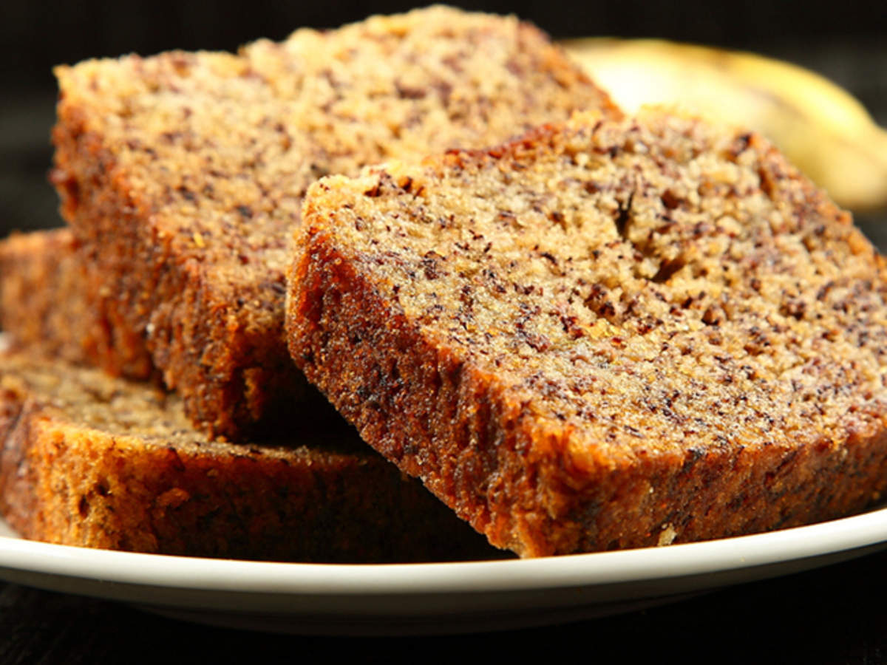

Banana Cake

Nutritious Banana Cake
With this banana cake you cant go wrong, its good for your health and test
Ingredients
- Over-ripe Bananas
- Sugar
- Salt
- Olive Oil
- Warm water
- Baking powder
- Raw Eggs
- Baking flour
- An oven
Steps
- Mince the ripe bananas together to make a pudding
- Seave the dry ingredients together in on container, salt, sugar, floor, baking powder
- Mix all wet ingredients together with the pudding made earlier (apart from water)
- Mix the dry mixture with the wet mixture to make a ready dough
- Keep mixing the dough till its ready
- Put in the oven on meduim heat for 40 minutes